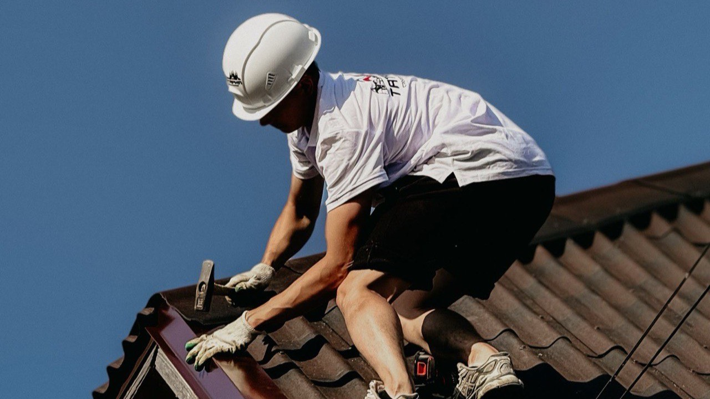
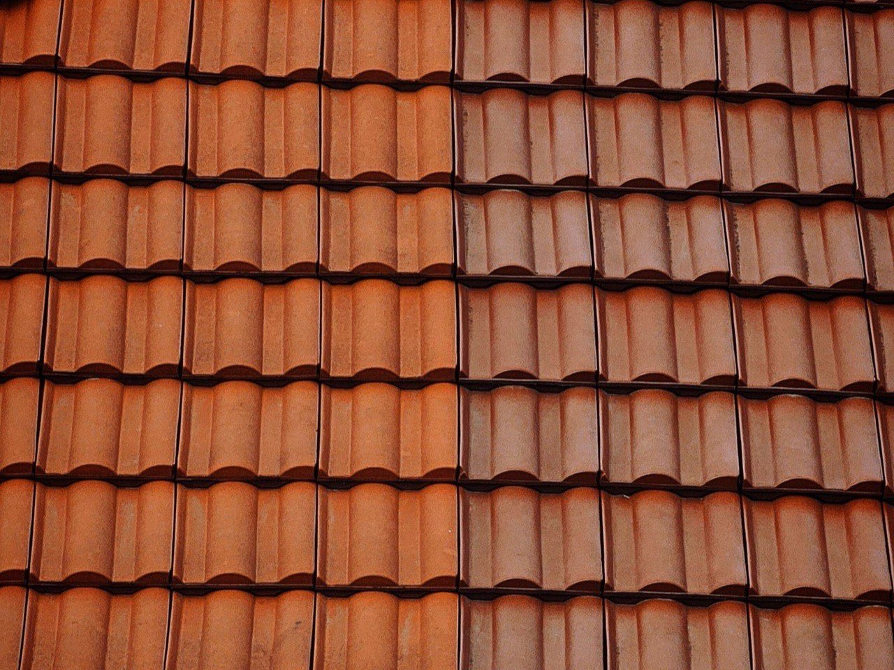
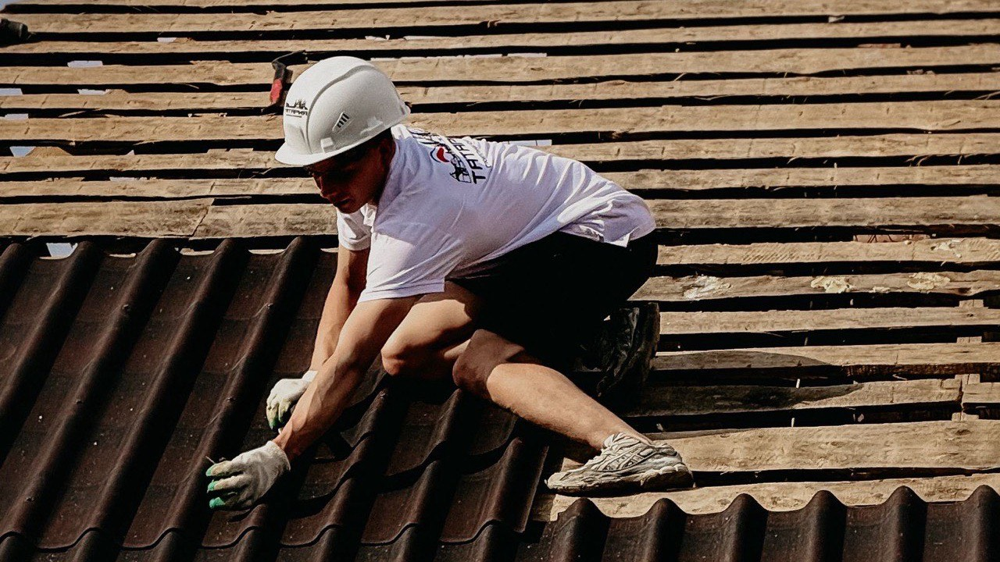

Votre toiture réparée dans les règles de l'art.
Fuite, tuiles cassées, faîtage fatigué ou couverture en fin de vie : un seul artisan, un diagnostic honnête, un devis clair. Rien ne s'ajoute en cours de route.
- Devis gratuit et chiffré sous 24 h, sans engagement
- Artisan couvreur, garantie décennale
- Fuites traitées en priorité, bâchage si nécessaire
- Remplacement à l'identique : votre toit garde son caractère
Réponse le jour même du lundi au samedi, 8 h à 19 h.

Une toiture fatiguée ne prévient pas.
Tuile plate, tuile canal, toits pentus du Périgord : les toitures de Dordogne sont belles mais exigeantes. Entre gel d'hiver, orages d'été et humidité des vallées, une couverture fatiguée ne prévient pas : elle lâche pendant l'orage.
L'eau trouve toujours son chemin
Une tuile déplacée, un solin décollé, un faîtage fissuré : il n'en faut pas plus pour qu'une averse entre dans la maison.
La charpente encaisse en silence
Le bois humide gonfle, se tache, puis pourrit. Quand la fuite devient visible au plafond, elle travaille souvent depuis des mois.
L'isolation part avec l'eau
Un isolant gorgé d'eau n'isole plus : la facture de chauffage monte pendant que la toiture se dégrade.
La facture change d'échelle
Réparée tôt, une toiture coûte quelques tuiles. Réparée tard, c'est la charpente, l'isolation et les plafonds qu'il faut reprendre.
Quatre étapes, un seul artisan.
Du diagnostic à la réception. Tout est annoncé sur le devis, rien ne s'ajoute en cours de route.
Diagnostic en toiture
Montée sur le toit, contrôle des tuiles, du faîtage, des solins et de la zinguerie. Vous recevez des photos de ce qu'on a vu.
Devis poste par poste
Chaque intervention est chiffrée ligne par ligne. Vous savez ce qui est urgent, ce qui peut attendre, et pourquoi.
Travaux dans les règles
Réparation ciblée ou rénovation complète : matériaux adaptés à votre toit, remplacement à l'identique, chantier protégé.
Réception et garanties
Visite de fin de chantier, photos avant / après, facture détaillée. Les travaux sont couverts par la garantie décennale.
Compris dans chaque chantier
- Bâchage provisoire si la toiture est exposée
- Remplacement des tuiles à l'identique
- Contrôle du faîtage, des solins et des rives
- Vérification de la zinguerie et des gouttières
- Évacuation des gravats en fin de chantier
- Photos avant / après et facture détaillée
Ce qui se voit, et ce qui ne se voit pas.
Une couverture réussie, c'est un alignement propre vu du sol, et surtout une étanchéité qui tiendra les tempêtes des vingt prochaines années.

Photos d'illustration du métier, pas de chantiers de l'entreprise. Vos propres photos avant / après vous sont remises en fin d'intervention.
Combien coûtent des travaux de toiture en Dordogne ?
Personne ne peut chiffrer une toiture sans être monté dessus. Une gouttière à refixer et une couverture à rénover n'ont pas le même budget, et le diagnostic dit honnêtement dans quel cas vous êtes.
Tuiles remplacées, faîtage rescellé, solin repris, fuite colmatée : on ne change que ce qui doit l'être.
Dépose de l'ancienne couverture, contrôle de la charpente, écran sous-toiture et pose neuve.
Le chiffrage est gratuit et remis après visite. Il est détaillé poste par poste, valable un mois, et vous n'avancez rien pour l'obtenir.
Ce qui fait varier le prix
- La surface et la pente de la toiture
- Le matériau : tuile canal, mécanique, plate, ardoise
- L'étendue des dégâts constatés au diagnostic
- L'état de la charpente et des liteaux
- L'accès : échafaudage ou nacelle nécessaires
- La zinguerie à reprendre ou à créer
Visite et devis gratuits, aucun acompte demandé.

Une petite fuite aujourd'hui, un gros chantier demain.
Plus une toiture attend, plus la liste des travaux s'allonge. Faites-la vérifier tant que ce n'est qu'une réparation.
Ce que disent nos clients.
Intervention de très bonne qualité : réfection complète d'une toiture. Travail fini et soigné. Le nettoyage des abords a été parfaitement réalisé.
Entreprise professionnelle très sérieuse, de qualité, que je recommande.
Professionnel, travail très soigné.
Ce qui se passe après votre demande.
Vous laissez un numéro, pas votre après-midi. Voici le déroulé exact, et ce qu'il ne comprend pas.
On vous rappelle
Le jour même en général, sous 24 h ouvrées au plus tard. Un seul appel : si vous ne répondez pas, on laisse un message et on attend votre retour.
On convient d'un passage
À l'heure qui vous arrange. L'artisan monte sur le toit et cherche d'où vient le problème, et vous n'avez pas besoin d'être là si l'accès est possible.
Vous recevez le devis
Détaillé poste par poste, avec les photos de ce qui a été vu. Valable un mois, sans engagement, et vous n'avancez rien.
Vous décidez
Si vous dites non, l'histoire s'arrête là : pas de relance insistante, pas de numéro revendu. Si vous dites oui, on cale une date ensemble.
Ce que la demande n'engage pas
- Aucun paiement, aucun acompte
- Aucune donnée revendue ni partagée
- Aucune relance après un refus
Bergerac, le Bergeracois et toute la Dordogne.
Nous intervenons dans toute la Dordogne, du Périgord blanc au Périgord noir, de Périgueux à Sarlat et de Bergerac à Brantôme.
Votre commune n'est pas dans la liste ? Appelez-nous, on vous dit tout de suite si on se déplace.
Vous vous demandez…
Une question qui n'est pas là ? Un appel suffit, on répond sans jargon et sans forcer la vente.
06 98 29 79 95Combien coûte une réparation de toiture ?
Ma toiture fuit, en combien de temps intervenez-vous ?
Faut-il refaire toute la toiture ?
Travaillez-vous la tuile plate des toits périgourdins ?
Vos travaux sont-ils garantis ?
Combien de temps durent les travaux ?
Puis-je profiter des travaux pour isoler la toiture ?
Intervenez-vous sur les bâtiments anciens ?
Faites vérifier votre toiture, c'est gratuit.
Un artisan passe, monte, regarde et vous dit ce qu'il en est. S'il n'y a rien à faire, il vous le dira aussi.
Demander mon devis
Deux champs, un rappel sous 24 h ouvrées.